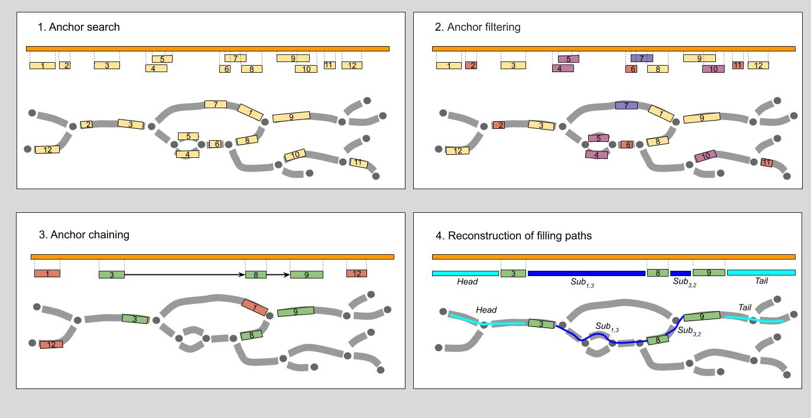

SPAligner: long read to graph aligner
SPAligner is a tool for fast and accurate alignment of nucleotide sequences to assembly graphs. It takes file with sequences (in fasta/fastq format) and assembly in GFA format and outputs long read to graph alignment in various formats (such as tsv, fasta and GPA).
Compilation
To compile SPAligner, run
After the compilation is complete, spaligner executable will be located in the bin folder.
Running SPAligner
Synopsis:
spaligner spaligner_config.yaml \ # config file
-d pacbio \ # data type: pacbio, nanopore
-g assembly_graph.gfa \ # assembly graph
-k 77 \ # graph k-mer size
-s pacbio_reads.fastq.gz \ # input sequences / reads
-t 8 # number of threads
By default, spaligner_config.yaml can be found in src/projects/spaligner/.
Alignments will be saved to spaligner_result/alignment.tsv by default.
Command line options
-d <type>
long reads type: nanopore or pacbio
-s <filename>
file with sequences in FASTA or FASTQ formats (can be gzipped)
-g <filename>
file with an assembly graph in GFA format
-k <int>
k-mer length that was used for graph construction
-t <int>
number of threads (default: 8)
-o, --outdir <dir>
output directory to use (default: spaligner_result/)
Output
SPAligner can represent the results in three formats: .tsv (default), .fasta and *.gpa.
spaligner_result/alignment.tsv tab-separated file with alignments information, each line represents an alignment of a single sequence
spaligner_result/alignment.fasta each record represents alignment of a sequence onto assembly graph
spaligner_result/alignment.gpa alignment stored in gpa-format
Results interpretation
SPAligner can represent the results in three formats: .tsv (default), .fasta and *.gpa. Name of each record in fasta files shows information about alignment position on graph and on sequence.
Example 1
>name|Edges=1-,2+,5+|start_g=3283|end_g=35|start_s=0|end_s=291
ATGAAAATCACTCCTGAACAGGCTCGTGAGGCTCTGGATGCCTGGATATGTCGACCAGGAATGACACAGGAGCAGGCGACGATATTAATCACTGAAGCATTCTGGGCTTTGAAAGAGCGCCCGAACATCGATGTTCAGCGTGTCACATATGAAGGTGGCGCGATTGATCAGCGAGCGCTTGGCGTTAATCGAGTGAAGATATTTGAACGCTGGAAGGCTATCGACACCAGGGATAAGC
GTGAAAAGTTCACGGCGCTAGTGCCTGCAATTATGGAGGCTACCACTGGATGA
name — sequence name
1-,2+,5+ — alignment path
3283 — start position of alignment on the first edge of the path (here on conjugate edge to edge with id=1)
35 — end position of alignment on the last edge of the path (here on edge with id=5)
0 — start position of alignment on sequence
291 — end position of alignment on sequence
Each line in tsv-file represents alignments of a single read.
Example 2
name 0 2491 536 1142 2491 44+,24+,22+,1+,38- 909,4,115,1,1142 AAACTTTTATTGTGCATACGGCGATTAAGACGGGAAAAGTCGGTGAT...
name — sequence name
0 — start position of alignment on sequence
2491 — end position of alignment on sequence
536 — start position of alignment on the first edge of the Path (here on edge with id=44)
1142 — end position of alignment on the last edge of the Path (here on conjugate edge to edge with id=38)
2491 — sequence length
44+,24+,22+,1+,38- — Path of the alignment
909,4,115,1,1142 — lengths of the alignment on each edge of the Path respectively (44+,24+,22+,1+,38-)
AGGTTGTTTTTTGTTTCTTCCGC... — sequence of alignment Path
Example 3
Sometimes sequence alignment on the graph can be represented as several non-overlapping subpaths (if there is no alignment with appropriate score between two consecutive bwa anchors).
So, there can be several unconnected alignments of sequence onto assembly graph and several start positions, end positions, paths etc.:
The sequence name has two alignments on the graph:
- The first alignment starts on sequence on position 4 and ends on position 7. Corresponding path consists of a single edge 123+ (i.e. 123+) with start on position 2 and end on position 5. Path sequence: GAT.
- While the second alignment covers the end of the sequence, starting on sequence on position 10 and ending on position 19. Corresponding path consists of two edges 288- and 128+ (i.e. 288-,128+) with start on position 7 (on 288-) and end on position 6 (on 128+). Path sequence: TTATCCGGG.
If a sequence was not fully aligned, SPAligner tries to prolong the longest alignment subpath in order to reconstruct a full alignment path. In Example 2 SPAligner was not able to prolong any of two given alignments.
Algorithm overview
Overview of the alignment of the nucleotide query sequence S (orange bar) to assembly graph G. Assembly graph edges are considered directed left-to-right (explicit edge orientation was omitted to improve the clarity).

- Anchor search. Anchors (regions of high similarity) between the query and the edge labels are identified with BWA-MEM.
- Anchor filtering. Anchors shorter than K, assembly graph K-mer size,(anchors 2, 6, 11), anchors “in the middle” of long edge (anchor 7) or ambiguous anchors (anchor 10 mostly covered by anchor 9, both anchors 4 and 5) are discarded.
- Anchor chaining. Heaviest chain of compatible anchors (chain 3->8->9) is determined.
- Reconstruction of filling paths. Paths for fragments of the query between the consecutive chain anchors (as well as left- and right-most fragments) are reconstructed. The procedure is performed using fast library for sequence alignment Edlib.
Parameters tuning
Full list of parameters can be found in spaligner_config.yaml.
General alignment parameters
run_dijkstra: trueRun Dijkstra algorithm to find alignment between anchors, ifrun_dijkstra: false, SPAligner will check limited number of paths and return the best one.-
restore_ends: trueRestore alignment path before leftmost anchor and after rightmost anchor. -
internal_length_cutoff: 200Anchors with length <internal_length_cutoffwill be filtered out. path_limit_stretching: 1.3Pair of anchors is considered to be compatible if (the minimal distance between them in graph) <path_limit_stretching* (the distance between their positions on sequence).path_limit_pressing: 0.7Pair of anchors is considered to be compatible if (the minimal distance between them in graph) >path_limit_pressing* (the distance between their positions on sequence).max_path_in_chaining: 15000Limit on number of paths to consider between two anchors on anchors chaining step.max_vertex_in_chaining: 5000Limit on number of vertices to consider between two anchors on anchors chaining step.
Internal run parameters
queue_limit: 1000000Limit on queue length.iteration_limit: 1000000Limit on total number of queue extraction.updates_limit: 1000000Limit on number of updates of shortest distance for all states.find_shortest_path: trueIffind_shortest_path: falseDijkstra algorithm will stop when it reaches finish state without searching for shortest path.restore_mapping: falseIfrestore_mapping: trueDijkstra algorithm will return full alignment information (used by for developers).penalty_ratio: 0.1Algorithm never considers states representing an alignment of a prefix S[0:i] with score more than min_score(i) + i*penalty_ratio (for nucleotide sequence alignment only).max_ed_proportion: 3Maximal edit distance is bounded by a fraction of the query sequence length |S|/max_ed_proportion. Increase of max_ed_proportion leads to shorter alignments but with higer identity.ed_lower_bound: 500Minimal penalty score of alignment.ed_upper_bound: 2000Maximal penalty score of alignment.max_gs_states: 120000000If number of queue states exceedsmax_gs_limitthen shortest path search is not performed (for nucleotide sequence alignment only).max_restorable_length: 5000If distance between two anchors or between leftmost/rightmost anchor and start/end exceedsmax_restorable_lengththen shortest path search is not performed.
Increase of max_gs_states, max_restorable_length, queue_limit, iteration_limit or updates_limit may lead to longer alignments with the same identity level, but slows down the process and can use much more memory. Please change them if you 100% confident in what you are doing.
Turning off restore_ends or run_dijkstra in nucleotide sequence alignment mode leads to shorter alignments, but considerable speed-up.
References
If you are using SPAligner in your research, please cite:
For any questions or suggestions please do not hesitate to contact Tatiana Dvorkina tedvorkina@gmail.com.